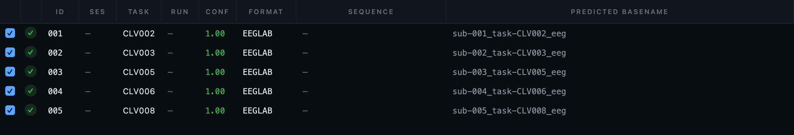
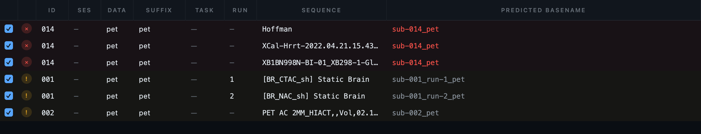
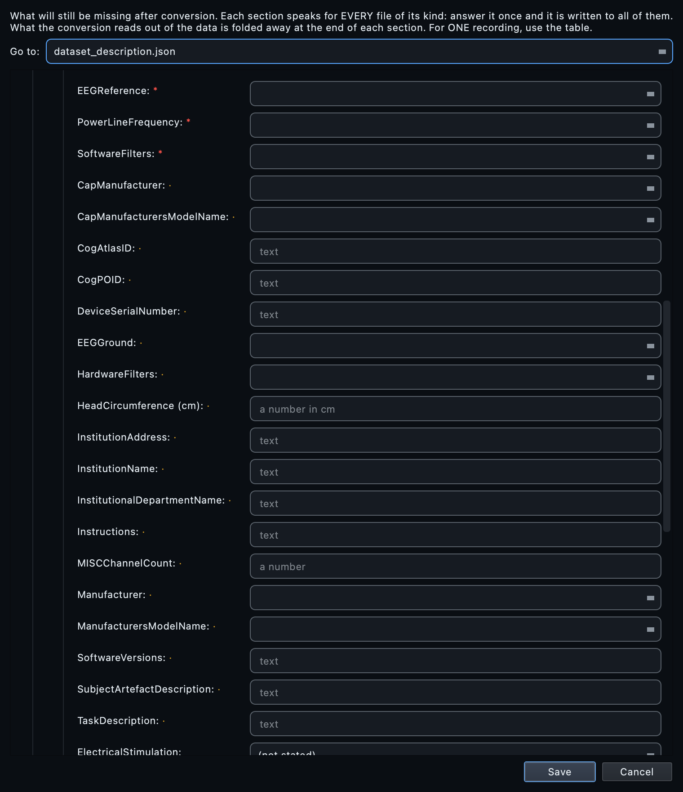
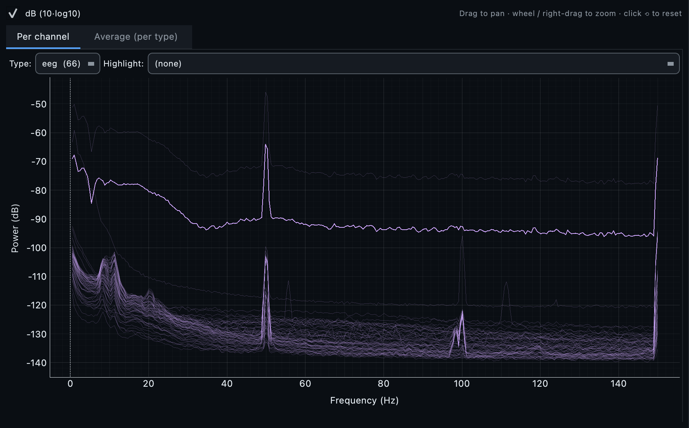
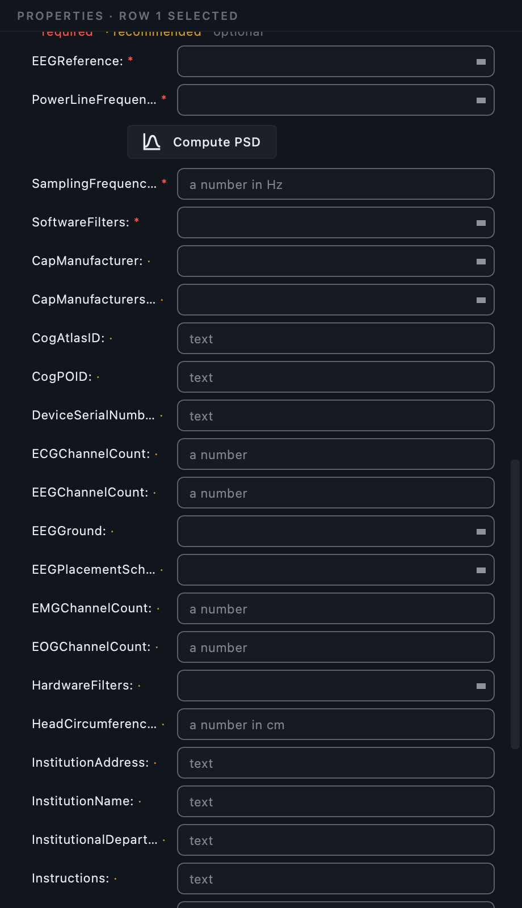
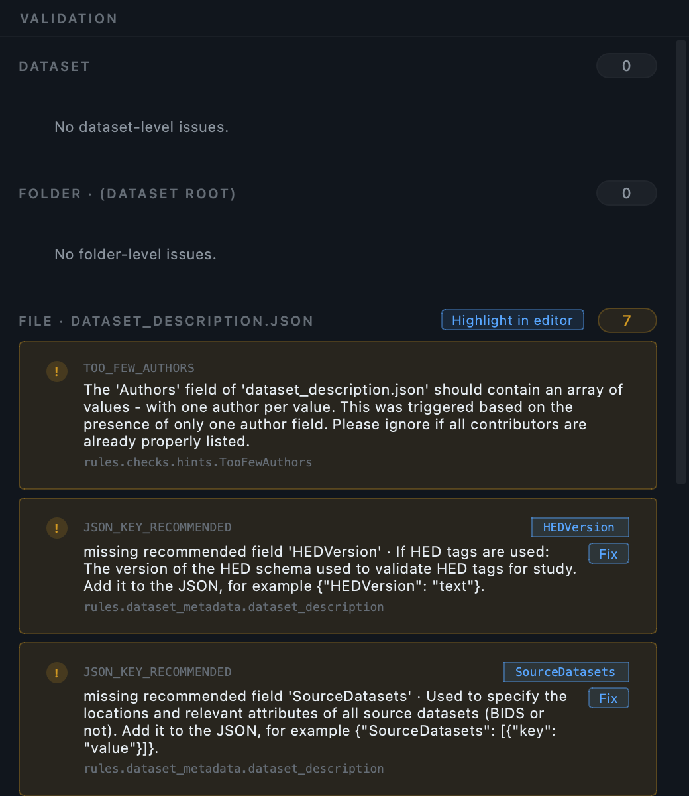
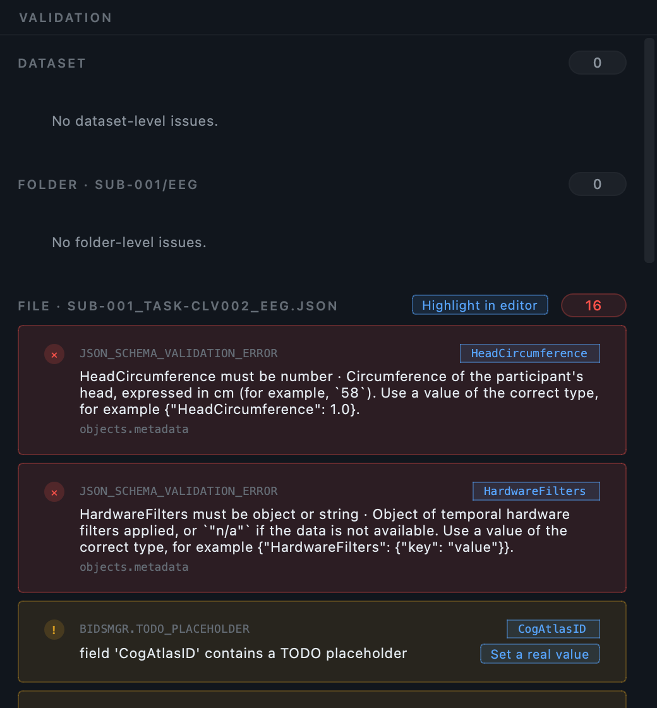
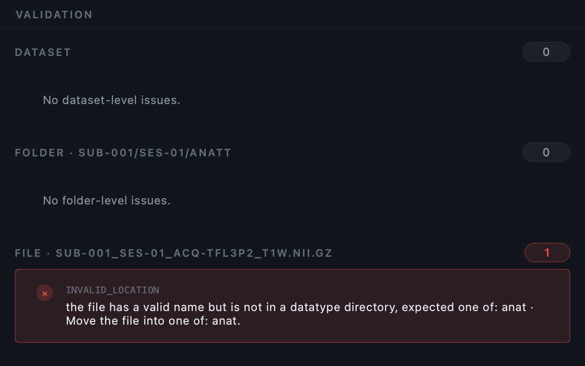

EEG, start to finish.
Twenty-eight EDF recordings from PhysioNet's motor-imagery set, taken from a raw folder to a validated BIDS dataset. The conversion itself takes seconds. This page is about the part that does not: deciding what each run actually was, and supplying the recording metadata that exists nowhere in an EDF file.
The GUI walkthrough explains each control once, for every modality. This page does not repeat it: it covers what is specific to EEG, in the order you meet it.
PhysioNet motor imagery (2 subjects)
A mirror of the standard PhysioNet motor-imagery layout. Two
subject folders (S001,
S002), each with 14
.edf recordings and their binary
.edf.event annotation siblings.
Two subjects, twenty-eight recordings.
Each subject has fourteen runs, R01
through R14. Every
.edf is paired with a binary
.edf.event annotation file that the
conversion reads alongside it.
What makes an EEG folder different from an MRI one
A DICOM file carries the patient identifiers, the study, the series and the acquisition parameters, so almost everything can be worked out by reading it. An EDF header carries the channels, the sampling rate, the duration and a start time, and very little else. Three consequences run through this whole page.
-
Subjects come from the path. There is no patient
identifier to group on, so the folder name is the evidence:
S001becomessub-001. A flat folder of recordings collapses to one subject, and you reconcile it by editing the subject cell. - Sessions are inferred from the recording date when the path carries no session token, the same rule the MRI side applies to study dates.
- The important metadata is not in the file. Which electrode was the reference, which was the ground, what the mains frequency was where you recorded, what cap was on the head. BIDS requires several of these and the format has nowhere to put them.
Know what the runs were.
R01 through
R14 follow a fixed protocol, and the
filenames say nothing about it. This is information you bring to the
conversion; no tool can recover it from the data. Have the mapping to
hand before you open the application.
| EDF token | What the run was |
|---|---|
R01 | baseline_eyes_open |
R02 | baseline_eyes_closed |
R03 | open_fist_real |
R04 | open_fist_imagined |
R05 | both_fists_real |
R06 | both_fists_imagined |
R07-R10 | repeats R03-R06 |
R11-R14 | repeats R03-R06 again |
The reference and ground electrodes, the mains frequency at the recording site (50 Hz in most of the world, 60 Hz in the Americas and parts of Asia), the amplifier make and model, and the cap. Five answers, given once, that reach all 28 sidecars.
Scan the folder.
Create a project, point Raw input at the top of the tree, and press Scan. Every recording is opened and asked the same questions the conversion will ask: how many channels of which types, the sampling frequency, the duration, the recording type, and the start date used to infer a session.
You get 28 rows, one per .edf, and no
skips. There are no localisers or scanner reports in an EEG folder for
the scanner to exclude, so the counts are simply 28 found and 28 kept.
What the scan decides, and what it only suggests
Datatype and suffix are decided: eeg and
eeg, at full confidence, because the format
is unambiguous. Two other things are worked out and offered rather than
applied:
- A montage, the closest match between your channel names and the standard montages MNE ships. On this dataset the channel names match the 10-05 system.
- A manufacturer, read from the EDF header where the amplifier wrote one.
Neither appears as a column in the table. They surface inside the fields they inform, in the properties panel and the dataset metadata dialog, where the value read from your own recordings is offered at the top of the list. They are suggestions because a header field can be wrong or absent, and a wrong answer in a sidecar is worse than a blank one.
If a recording needs a reader that is not installed, an ANT
.cnt without the optional
antio package for example, it arrives
as an excluded row carrying the reason, rather than being passed
over in silence. A recording missing from the inventory would
become a recording missing from your dataset.
Read the inventory.
The columns that carry the most for EEG are not the ones that matter for MRI. These are the ones to read first.
| Column | On this dataset |
|---|---|
id | 001 and 002, taken from the folder names. Check this first: it is a path heuristic, not a header fact. |
task | The filename token, S001R01. A placeholder, and Step 3 is about replacing it. |
format | EDF for all 28. |
n_chan, sfreq, duration | Read from the header. Hidden by default; add them from Manage columns. A run with an unexpected channel count or duration is worth opening before you convert it. |
predicted basename | The filename this row will produce. Red means another row wants the same one. |

Add the channel and duration columns. They are among the roughly forty the inventory carries, and hidden by default. Manage columns below the table shows, hides and reorders them, and the layout is remembered. On a large EEG study, sorting by duration is the quickest way to find the run that stopped early.
Name the tasks. This is the real work.
Every row arrives with task-S001R01 or
similar. That is the filename, not the task, and it will be baked into
28 BIDS filenames if you leave it. Worse, it is the kind of thing that
looks deliberate to whoever reads the dataset later.
Do it with bulk edit rather than row by row. Sort or
filter the table so the runs that share a task are together, select
them across both subjects, press Bulk edit, choose the
task column, and type the name once.
Watch what happens to the run numbers
The protocol repeats: R03 to
R06 run three times each. Once all three
repeats carry the same task name, three rows per subject resolve to the
same BIDS filename. That is a genuine repeat of the same thing, which
is what the standard's run entity is for,
so they are numbered run-1,
run-2 and
run-3 for you, in acquisition order.
Nothing turns red here, because BIDS has an answer. Red is reserved for the case where it does not, and both outcomes are visible in one frame:

run entity resolves, so they were
numbered automatically. The upper rows have nothing to tell them
apart, so they stay red and the conversion refuses to start until you
decide what distinguishes them.
The metadata an EDF file cannot hold.
Open Dataset metadata. The EEG section covers every
*_eeg.json in the dataset at once, so each
question is answered once and written into all 28 files.
Some of it the conversion already knows and will fill by itself: sampling frequency, channel counts by type, recording duration and type. Those are folded into the green Already answered by the conversion block, shown so you can check them rather than type them again. What remains is what was never in the file:
| Field | Why it is asked |
|---|---|
EEGReference | Required. Which electrode the signal is referenced to. A converter cannot know, so most write "n/a", which satisfies a validator while telling the reader something false. |
EEGGround | Required, and equally invisible in the file. |
PowerLineFrequency | Required. 50 or 60: a property of the building rather than the recording. You do not have to guess, see below. |
Manufacturer, ManufacturersModelName | Recommended. The suggestion read from the header is offered first in the list. |
CapManufacturer, CapManufacturersModelName | Recommended. Never in the data. |
SoftwareFilters, hardware filter settings | What was applied during acquisition, which changes how the signal should be interpreted. |
InstitutionName, department | Shared with every other modality, so it is asked once in the modality-agnostic section rather than per modality. |

EEGReference,
PowerLineFrequency and
SoftwareFilters among them; the amber dot
marks what it recommends. Each description is the standard's own
wording rather than a paraphrase, and the questions every modality shares are
asked once further up.
Read the mains frequency out of your own data
PowerLineFrequency is required, and a wrong
value is written into every sidecar in the study. You do not have to
take it on trust: the data will tell you. Select any recording, open it
in the Editor, press Load signal, then
PSD. In the Converter there is a
Compute PSD button in the properties panel, directly
under the line_freq field, which does the
same thing before you have converted anything.

PowerLineFrequency is 50. On a
recording made in the Americas the same peak sits at 60 Hz. The broad
bump around 10 Hz is the alpha rhythm and is signal, not interference.
How to read this plot
- Two tabs. Per channel overlays every channel of the selected type, which is where a bad electrode shows up as a trace sitting well away from the rest. Average (per type) gives the mean per channel type with a standard deviation band, which is the cleaner view for reading the mains peak.
- Type and Highlight. The Type dropdown picks the channel type, and Highlight isolates one channel from the crowd so you can identify which trace is the outlier.
- dB. The decibel toggle compresses the vertical range. Leave it on for reading peaks; turn it off to compare absolute power.
- It is interactive. Drag to pan, wheel or right-drag to zoom, and the crosshair reads out the exact frequency and power under the pointer. Zoom into 40 to 70 Hz if the peak is not obvious at full scale.
A notch filter was applied during acquisition. Record what the
filter was in SoftwareFilters, and take
the mains frequency from the recording site rather than the data.
When one recording differs
A dataset answer is a statement about every file of that kind. If one session used a different reference, or one subject was recorded on the other amplifier, select that row and answer in the properties panel instead. A per-recording answer wins for that recording alone, inherited values are shown greyed with a tooltip naming where they came from, and editing an inherited field back to the dataset value clears the override rather than storing a duplicate.

Events, and what the codes mean.
The .edf.event siblings hold annotations,
and the conversion turns them into an
events.tsv beside each recording. What it
cannot do is say what the codes mean. On this dataset the annotations
are T0, T1 and
T2: rest, the onset of motion in one set of
limbs, and the onset in the other, with which is which depending on the
run.
The scan seeds an event map from the codes it actually found, and you
supply the labels once. They are written into
events.tsv as a
trial_type column and described in the
accompanying events.json, which is what
makes the dataset readable by somebody who was not in the room.
Files that came from your stimulus software
Behavioural logs, stimulus files and separately produced event tables are attached per recording, in the properties panel, under companion files. They are copied into the BIDS tree beside the recording they belong to, with the suffix you choose.
Convert.
Check the BIDS preview in the bottom panel first: it shows the exact
filenames the current table will produce. Then press
Run conversion. Each row goes to
mne-bids, which writes the recording, a
channels.tsv naming every channel and its
type, an events.tsv, and the JSON sidecar
carrying your template answers.
Twenty-seven of the twenty-eight runs convert.
S001R03 fails, because its events table is
empty and mne-bids will not encode an empty one. That failure is
contained: the row is reported in the log with its reason and the other
twenty-seven are written normally. Finding out now, from a legible
message, is the difference between losing one run and not knowing you
lost it.
BIDS lists a set of EEG formats it accepts. If yours is not among
them, bidsmgr-convert --force-edf, or
the equivalent setting, re-encodes the recording to EDF on the way
in rather than leaving you to convert it separately first.
Aux channels get their real types
An EOG or ECG channel recorded through an EEG amplifier arrives typed
as EEG, because that is what the amplifier wrote. Left alone, every
later analysis treats a heartbeat as brain activity. The enrichment
retypes the channels you name in
channels.tsv, which is the file every
downstream tool reads to decide what a channel is.
Look at the signal before you trust it.
Open the dataset in the Editor and click a converted recording. A metadata card appears first, read without loading the data: what the file is, how many channels of which types, the sampling frequency, the duration. For checking that a conversion produced what you expected, that card is often enough.
Press Load signal for the interactive viewer. From there you can filter by channel type, pick individual channels, set how many are visible at once, change the amplitude scaling and the time window, and move through the recording with the scrollbar, the wheel or the keyboard. Hovering a trace names the channel.
events.tsv are drawn over the traces.
Turning events on jumps the view to the first one, because triggers
often begin well into a recording.
The power spectrum is the fastest check you can run
Open the PSD view, the same one described in Step 4. Two things are worth confirming on every dataset. The mains peak should be at the frequency you declared, and if you wrote 50 while the peak sits at 60 then the value in 28 sidecars is wrong. And a channel whose spectrum sits far from its neighbours is usually a bad electrode, which is far easier to see here than in the traces.
Validate.
Press Validate dataset. On this dataset you get 113
clean files, 29 warnings and no errors. Every warning is the same
thing: a recommended field still holding the literal
TODO the enrichment writes when it has
nothing to fill a field with.
They fall into two groups. The dataset-level fields, License, Authors,
Acknowledgements, which are about your study rather than your
recordings. And the EEG recommended fields the header did not supply,
ManufacturersModelName and
SoftwareVersions among them. Both are
answered in one pass: the first in the dataset template, the second in
the EEG section beside it.

Warnings are worth reading rather than clearing blindly. A recommended field that genuinely does not apply to your study is a legitimate warning to leave in place. The point of reading them is that you have decided, rather than not looked.
What an error looks like
Warnings are the common case after a first conversion. Errors happen when a value is the wrong kind of thing, which is easy to introduce by hand and impossible to see by reading the file.

HeadCircumference must be a number, and
HardwareFilters must be an object or a
string. Each finding gives the standard's description of the field and
an example of a value of the right type, so the fix needs no lookup.
The amber finding below is a different thing: a field still holding
TODO.
The structural error, and how to see it
The other kind worth knowing about is a datatype folder that is
misnamed. It happens when somebody tidies a tree by hand. Rename an
eeg folder to
eeeg on a copy, or an
anat to
anatt, and validate again:

anat folder typed as
anatt; a misnamed
eeg folder reports identically. Every
filename inside is still correct, which is why one-file-at-a-time
checking says nothing. BIDS tools read inside datatype folders, so
nothing will ever load these recordings, and the message lists the
folder names that would be valid.
Real numbers from this dataset.
Captured from a full run on the sample data, so you can check your own run against them.
One row per .edf, no
skips. Subjects come from the folder names,
S001 to
sub-001.
Each run written with its channels table, events
table and sidecar. S001R03 fails on an
empty events table; the failure is reported and the rest
complete.
No errors. All 29 warnings are
TODO placeholders in recommended
fields, fillable in one pass.
From the command line.
The command line drives the same engine. A scan run here produces the inventory the interface populates, and edits made in the interface are replayed by a later conversion.
# 1. Create the dataset and its project. bidsmgr-create ~/bids/motor_imagery --name "Motor imagery" # 2. Scan the raw folder into the project. 28 rows. bidsmgr-scan ~/raw/EEG_motor_imagery_sample_data \ --project ~/bids/motor_imagery --line-freq 50 # 3. Edit the inventory TSV: replace the task placeholders. # It is a plain tab-separated file, so a spreadsheet works. # 4. Convert. 27 of 28 written; the empty-events run is reported. bidsmgr-convert --project ~/bids/motor_imagery # 5. Fill what can be filled, and mark what cannot. bidsmgr-metadata --project ~/bids/motor_imagery --fill-todos # 6. Validate. 113 ok / 29 warn / 0 err. bidsmgr-validate ~/bids/motor_imagery
The recording metadata, reference, ground, device and event labels,
lives in a JSON file beside the inventory and is picked up
automatically. Point at it explicitly with
--recording-meta PATH if you keep it
elsewhere. Every flag is documented in the
CLI reference.
What usually goes wrong with EEG.
| What you see | What it means |
|---|---|
| Every recording collapsed into one subject | The folder gave no subject evidence, which happens with a flat directory of recordings. Edit the subject cell, or use bulk edit on the rows that belong together. |
Task names like task-S001R01 in the output |
The placeholder was converted. Fix the
task column and
convert again with
--on-existing replace. |
| A row that will not convert, with an mne-bids message | Usually the recording itself: an empty events table, a channel type mne-bids will not accept, or a truncated file. The log names the file and the reason. |
.eeg or .vmrk will not open in the Editor |
Those are BrainVision sidecars, not recordings. Open the
.vhdr, which is the file that
points at both. |
An ANT .cnt row excluded, needing antio |
That reader is an optional package. Install it and scan again. The row is visible rather than missing precisely so you find out now. |
| A mains peak at 60 Hz when you declared 50 | The declared value is wrong in every sidecar. Change the dataset default and re-run the metadata step; no reconversion is needed. |
Next
The MEG tutorial covers the same ground for magnetoencephalography, where more of the metadata is in the file and the questions that remain are different. The multimodal tutorial shows EEG converting in the same pass as MRI and PET.